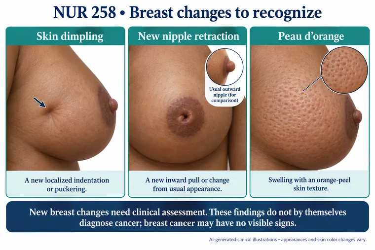

Module 11
Female reproductive assessment and breast awareness
- Recognize: Assess bleeding pattern, pelvic symptoms, sexual/reproductive history and new breast changes while maintaining consent and privacy.
- Act: Report a new lump, nipple/skin change or unusual discharge; arrange appropriate clinical assessment and indicated screening.
- Remember: Breast self-awareness complements screening but does not replace mammography or diagnostic evaluation. Do not use a normal self-exam to dismiss persistent symptoms.
Covers: Female Reproductive Disorders · Breast self-exam
Pictures + handout

